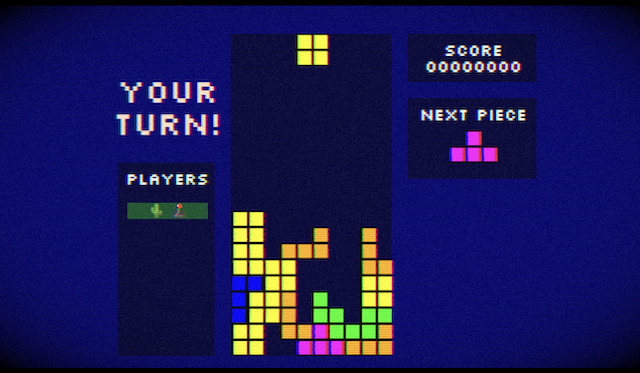
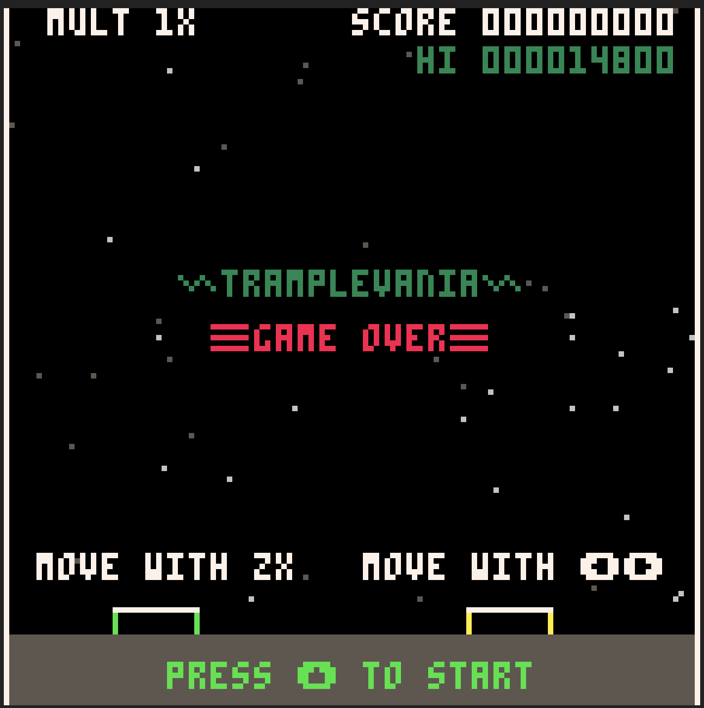
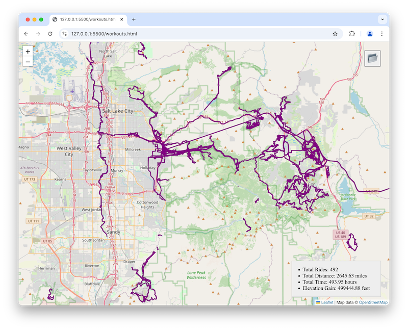
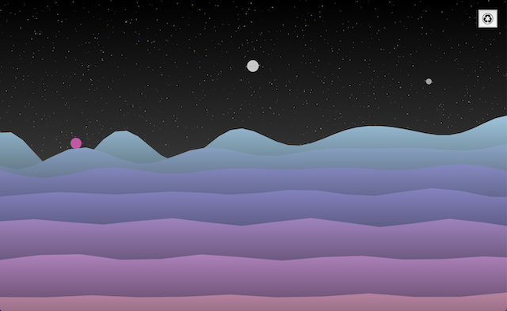
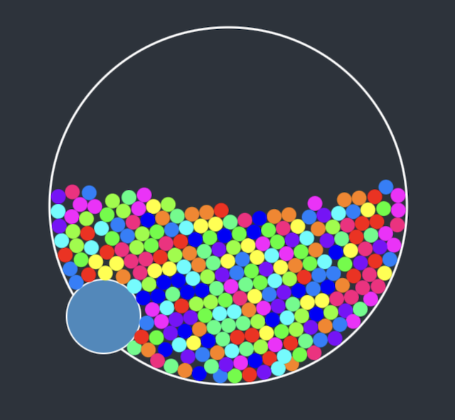
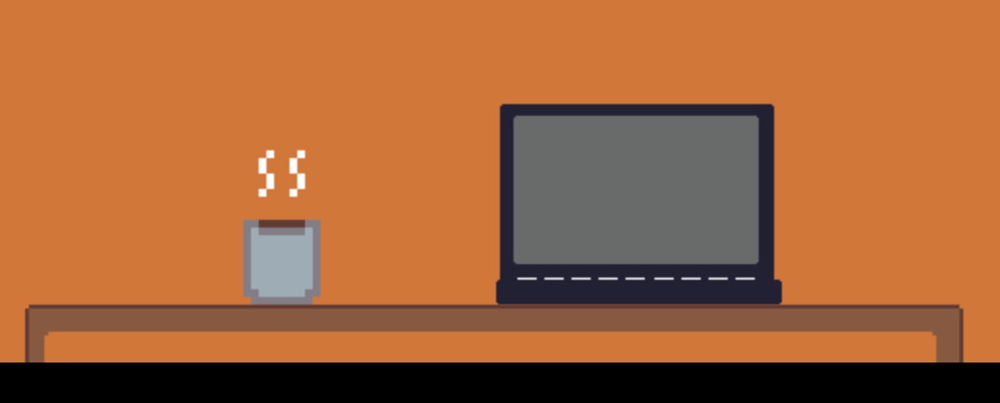
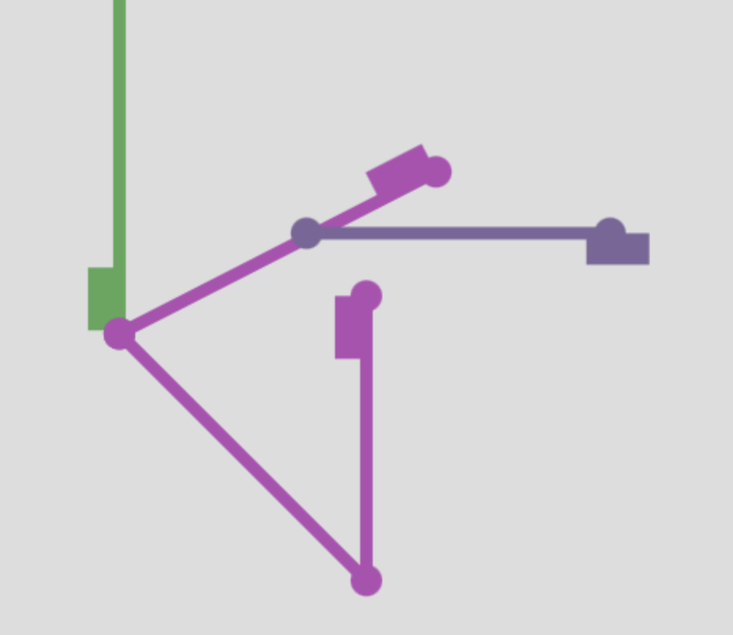
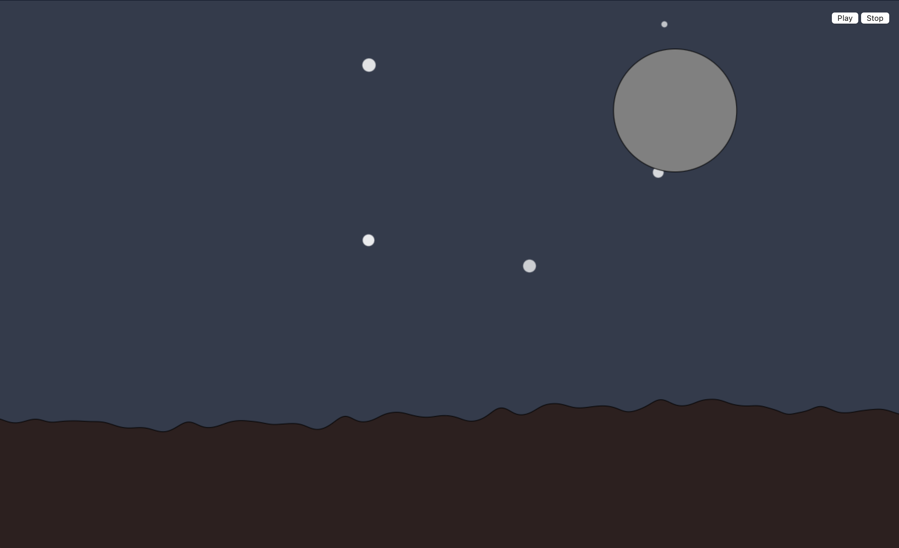

Recurse Center
I'm attending the Recurse Center from September to December 2024. There's so much I could write about the program, it's been an amazing experience. But I don't want to use too much of my all-too-short 12 week time there updating my web site, a task made all the harder because I haven't touched my web site in 10 years. So for now this is a simple gallery of some of the projects I've been working on.
That said, my favorite thing about Recurse has been meeting so many amazing people, and joining them to work on their passion projects. So this gallery of my own projects is missing out on a lot of the magic.
I'll continue to update this page with new projects during my time at Recurse.
Reading Groups
Reading groups with fellow Recursers are a lot of fun, and it gives me a chance to tackle some of these books that have been on my list for a long time.
In Progress
Drawbot

I'm currently working on a robot to draw with a marker on vertical surfaces such as windows and walls. Details and updates are in the GitHub repo.
Testing Distributed Systems
A background thread through my time at Recurse has been researching modern techniques in testing distributed systems. There has been a lot of new techniques and technologies developed in the past decade.
I have a Go implementation of Raft that I'm developing as a testbed to experiment and learn about different testing techniques. Currently I'm building out a framework for deterministically random simulation of the system, with some "chaos" injected to trigger network failure edge cases and things like that. I'm already seeing some great results. More details are in that repo.
Games
Co-op Tetris

I love thinking of ways for strangers to interact over the internet and have a good time. Coming up with ways to avoid feeding the trolls isn't easy, of course.
So I had this weird idea to take the most cloned game of all time and put a new twist on it: round-robin co-op. Visit the site with others and you'll be thrown into the same game. Each time the player drops a piece, control passes to the next player. You'll have to work together to score points.
While my original idea was for this to be a global playground, this is a blast to play with others while on a video call. So I may add the ability to create a private game and send the join link to others.
Developing the game itself has been a great way to pair with lots of other people at Recurse and have an awesome time. The code is on GitHub. The server is written in Go, the client is Typescript.
Tramplevania

A group of us had a game jam during the 5th week. It was awesome seeing the huge variety of gameplay, ideas, and technologies. This was in mid-October, the theme was "sp00ky". I ended up recruiting my 5-year-old to be game designer and he had a very specific vision for a game involving monsters on trampolines, with the monster changing on each bounce. There was a lot of back-and-forth, he was not willing to compromise his vision.
I used Pico-8 and paired on this with quite a few people over the two days, it was a blast. I love local co-op games, though this can also be played solo if you are up for controlling both trampolines at the same time.
Workout History Viewer

I wanted to visualize all my recorded bike rides on one map, and couldn't find an existing tool that could do that. I figured out how to export my entire workout history from Apple Health, and hooked it up to an OpenStreetMap view.
The image above links to the live site, but it needs instructions on how to export your data set and get it onto your computer where you can open the entire folder of .gpx workout recordings. It only works in browsers such as Chrome that support window.showDirectoryPicker()
The end result is a lot of fun to browse around, though.
Creative Coding
I've been joining a group doing weekly creative coding projects: we come up with a prompt, and then we all take 90 minutes to make whatever inspires us from the prompt. Or ignore the prompt completely and make whatever you are feeling. In groups or solo. I look forward to this every week, it's a blast. 90 minutes is such a tight time constrant, it really forces you to focus!
I've also been working on a few other generative art projects unrelated to the weekly meetup.
Alien Skies

Inspired by the amazing generative art work of Frank Force. Roll to generate a new scene.
Gumball Constraints

I made this little toy after reading this blog post on Verlet integration, a physics solver technique I hadn't heard of before. Mobile friendly, to entertain the kid!
Cold Fingers

The prompt was "cold fingers". I decided to practice my rusty pixel art skills and play with CSS cursors.
Train Switching

The prompt was "switching trains". I couldn't decide at first if that meant a person switching between trains, or trains switching tracks. Eventually I made a random metro generator inspired by the art style of Mini Metro. Refresh to generate a new layout.
Music Beat Detection

I've never done any audio programming before. I decided to learn about detecting the beat of music. I constrained myself to do it in real-time to eventually support microphone input, which limited the algorithms I could use since many want to analyze the whole song at once.